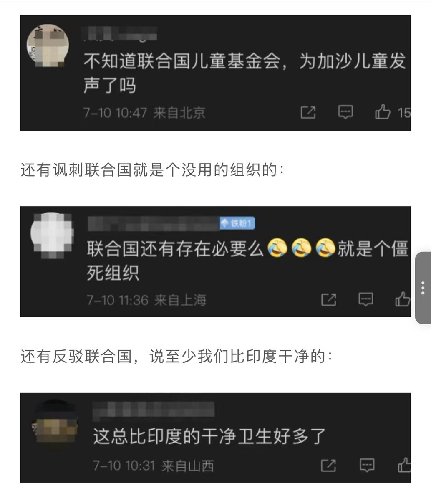
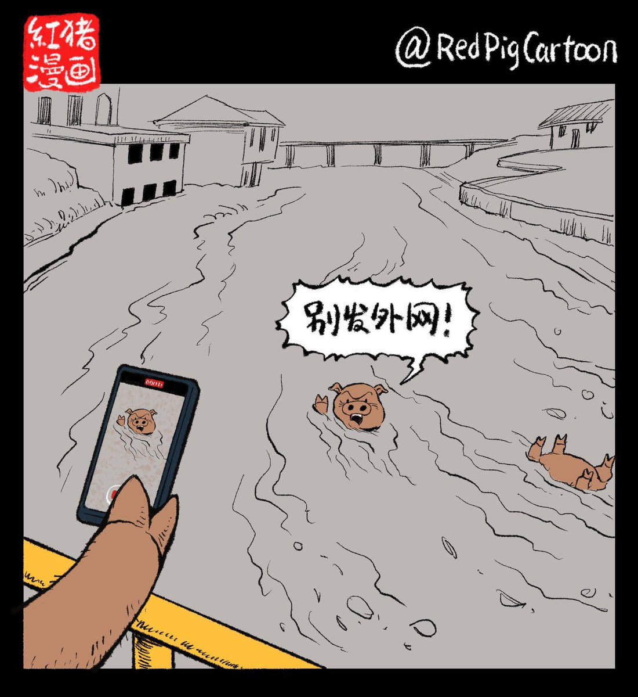

RT @laozhouhengmei: 昨天，联合国儿童基金会针对甘肃天水幼儿园铅中毒事件发表了声明。
那些本来对铅中毒事件还有点愤怒的小粉红，一听到有外国人对中国的事指手画脚，突然不乐意了，开始在评论区里冷嘲热讽了。说什么“联合国为加沙儿童发声了吗？” （人家还真有），西方…

那些本来对铅中毒事件还有点愤怒的小粉红，一听到有外国人对中国的事指手画脚，突然不乐意了，开始在评论区里冷嘲热讽了。说什么“联合国为加沙儿童发声了吗？” （人家还真有），西方…


昨天，联合国儿童基金会针对甘肃天水幼儿园铅中毒事件发表了声明。
那些本来对铅中毒事件还有点愤怒的小粉红，一听到有外国人对中国的事指手画脚，突然不乐意了，开始在评论区里冷嘲热讽了。说什么“联合国为加沙儿童发声了吗？” （人家还真有），西方双标，甚至还说铅中毒比印度的干净卫生好多了。 https://t.co/jig6h1QYiX
那些本来对铅中毒事件还有点愤怒的小粉红，一听到有外国人对中国的事指手画脚，突然不乐意了，开始在评论区里冷嘲热讽了。说什么“联合国为加沙儿童发声了吗？” （人家还真有），西方双标，甚至还说铅中毒比印度的干净卫生好多了。 https://t.co/jig6h1QYiX